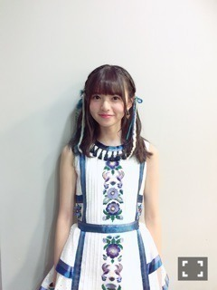
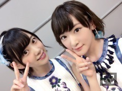

| 2016/07 16 Sat | 久しぶりにっ！！ |
今日は
TBS音楽の日
生放送で、二曲披露させて頂きました〜ヽ(・∀・)ノ
凄いっ！
二曲もヽ(・∀・)ノ⭐️
ありがたいです(´；ω；｀)
あすかちゃんセンターの
裸足でSummer
テレビでは、初披露でしたヽ(・∀・)ノ
収録とかはしてるから
感覚が分かんなくなってたけど、
皆さんは
テレビで観るのどうでしたか〜？？

衣装はあすかちゃんと同じタイプの物を生駒も着てます(・ω<)
かわいいあすかちゃんを皆さんにもおすそ分け

あすかちゃんのこの写真の写り方大好き

なんかハムスターみたい

今回みおなとお隣さんだよ〜ヽ(・∀・)ノ
歌もダンスも夏にぴったりで、ツアーで踊るの楽しみだな〜

まだ覚えられてないダンスブロックあるから頑張らなければ。。。
今ね、東京の家にね。
久しぶりに家族全員揃ってるんだよヽ(・∀・)ノ
今夜の夜ごはんは、お母さん特製の冷製パスタでした〜ヽ(・∀・)ノ
食後のスイカまで平らげました(・ω<)
家が一番いいね(・ω<)
明日も頑張ろう！
あ、
あと。
15枚目の個別握手会、
生駒ちゃんのはいつでも取れるので是非会いに来てくださいまし〜ヽ(・∀・)ノ
待ってますヽ(・∀・)ノ
ではっ
へばなっ☆彡
コメント(571)
2016/07/16 22:30